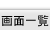
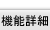
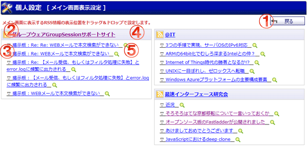

メイン画面の表示位置の設定を行う画面です。

機能説明
戻るボタン遷移元画面へ遷移します。 |
RSS名称別ウィンドウで該当ページが表示されます。 |
|---|---|
RSS内容別ウィンドウで該当ページが表示されます。 |
RSS情報各RSS情報をドラック＆ドロップすることにより任意の場所へ移動・配置することが可能です。 |
ウェブ検索フィードのタイトルを検索キーワードにウェブ検索を行います。 |